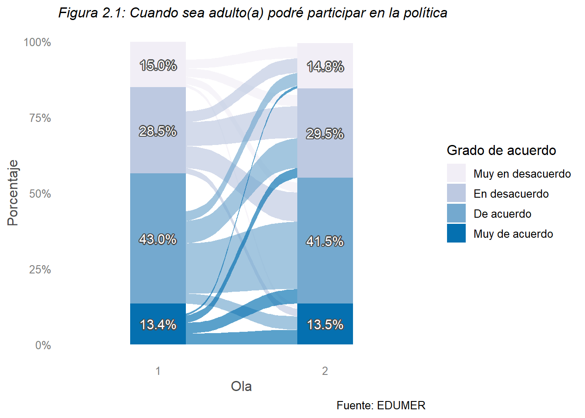
4 Ciudadanía
Los aprendizajes atribuidos a la educación ciudadana en las escuelas responden a la necesidad de preparar a las nuevas generaciones para la vida en democracia, así como para sus exigencias morales y cognitivas (Cox y Castillo 2015). En esta línea, la Ley de Formación Ciudadana (Ley N° 20.911) establece que todos los establecimientos educacionales deben diseñar un Plan de Formación Ciudadana que brinde a los estudiantes las herramientas necesarias para asumir una vida responsable en una sociedad libre, promoviendo el desarrollo integral de la persona humana como base del sistema democrático, la justicia social y el progreso. Entre sus principales objetivos, la ley busca fomentar la comprensión y el análisis del concepto de ciudadanía y sus derechos y deberes asociados, además de incentivar la valoración de la diversidad social y cultural del país, la tolerancia y el pluralismo.
Por otra parte, la autoeficacia digital se refiere a las capacidades percibidas por los estudiantes para utilizar eficazmente las Tecnologías de la Información y la Comunicación (TIC) (Hatlevik et al. 2018). Estudios indican que una alta autoeficacia en el uso de estos recursos está relacionada con un mejor desempeño académico, puesto que los estudiantes que confían en sus habilidades digitales tienden a emplear estrategias más efectivas para procesar información y resolver problemas (Padilla-Carmona, Gil Flores, y Rísquez 2022).
Según Hatlevik et al. (2018), el desarrollo de la autoeficacia digital está influenciado por factores como el nivel socioeconómico y el género de los estudiantes. Se ha observado que los hombres tienden a sobreestimar sus habilidades TIC, mientras que las mujeres, a pesar de obtener mejores resultados en alfabetización digital, suelen subestimarse en esta área. En el ámbito socioeconómico, los padres con menos recursos suelen tener un acceso limitado a la tecnología y una menor alfabetización digital, lo que dificulta su capacidad para apoyar el aprendizaje tecnológico de sus hijos. En este sentido, la exposición temprana y el uso frecuente de tecnología en el hogar se asocian con una mayor confianza en el uso de las TIC, destacando así la importancia del entorno familiar en el desarrollo de la autoeficacia digital.
Este módulo se compone de tres grandes apartados: Autoeficacia política, Socialización política en la escuela y Autoeficacia digital. Cada uno incluye preguntas sobre actitudes, participación, comprensión y habilidades, con el propósito de medir la ciudadanía desde la percepción de los estudiantes tanto en el ámbito escolar como en el digital.
4.1 Autoeficacia política
Este apartado se compone de dos preguntas centrales que miden la percpeción de autoeficacia política de los/as estudiantes. En tanto que tan eficaz creen que es su incidencia en la política tanto en el futuro próximo (participar en la adultez) como en el presente (percepción del escenario político actual).
- Autoeficacia enfocada en la participación política
En la figura, se puede observar que en la ola 2 los/as estudiantes contestaron estar levemente más en desacuerdo (44.3%) con que podrán participar en la política en la adultez.
Cruces con características sociodemográficas de los estudiantes en la ola 2 del estudio
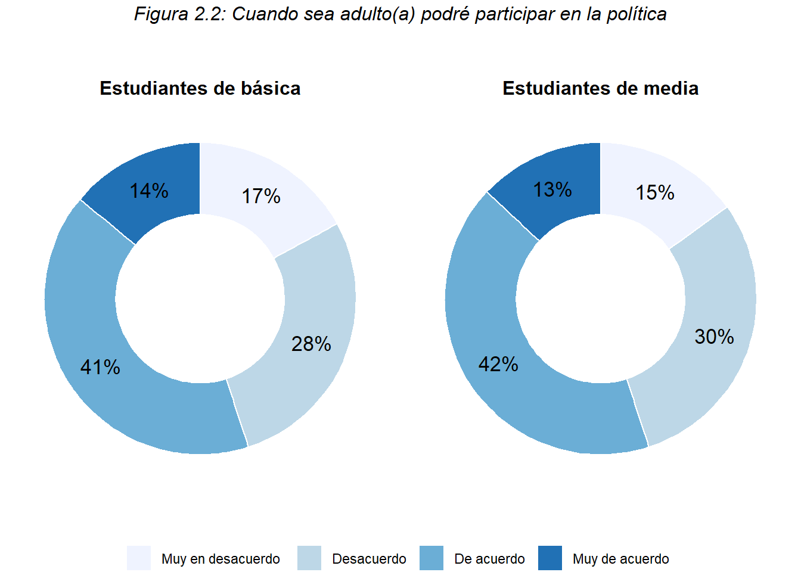
Al comparar por el curso en el que se encuentra el estudiante, no se presentan diferencias importantes. Sin embargo, estudiantes de básica poseen respuestas más radicales como “Muy de acuerdo” (14%) y “Muy en desacuerdo” (17%) que los estudiantes de media.
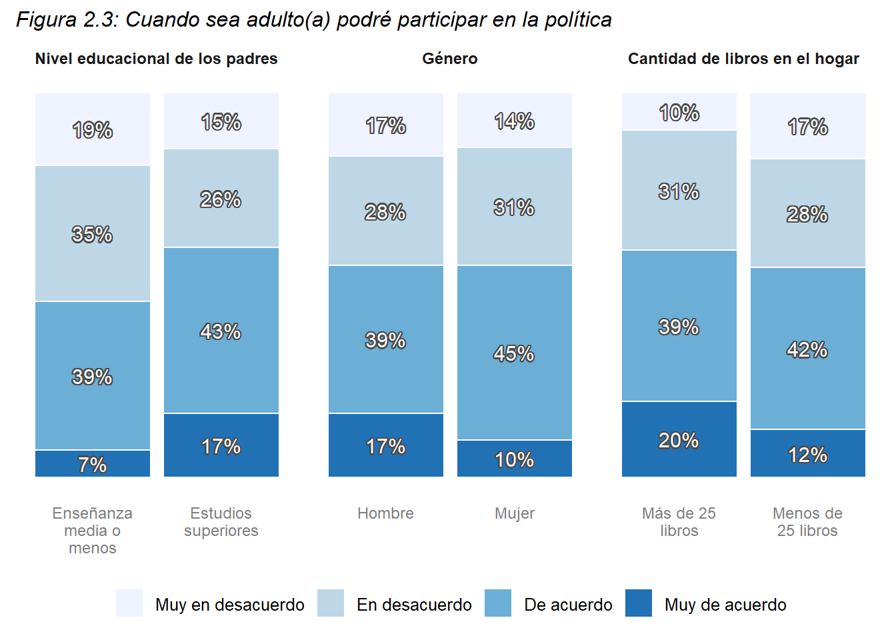
Estudiantes que tienen padres con estudios superiores están más de acuerdo con que participarán en política en la adultez (60%). Al diferenciar por género, tanto mujeres como hombres están de acuerdo con la afirmación en un 55%, pero estudiantes hombres contestan en mayor medida estar muy de acuerdo con que participarán más adelante (17%). Por último, estudiantes que poseen más de 25 libros en su hogar están mas de acuerdo con la afirmación en un 59%.
- Autoeficacia enfocada en la percepción política
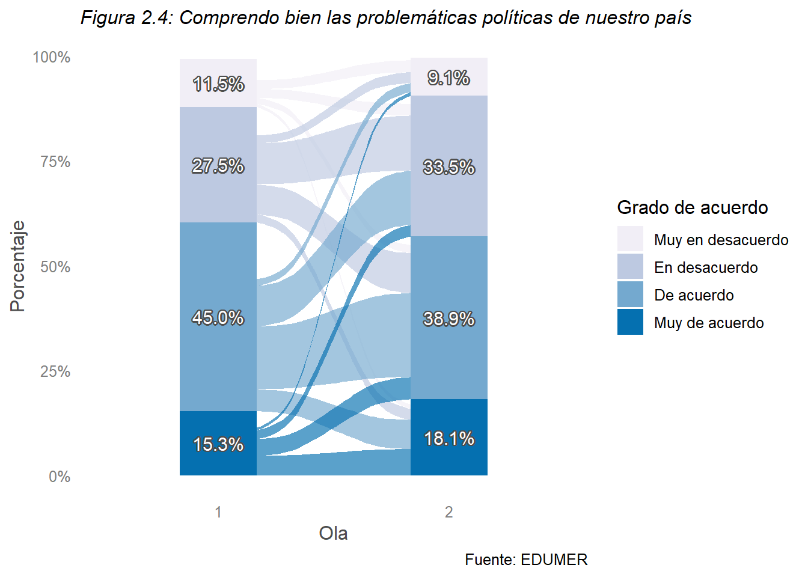
En la figura, se puede observar que en la ola 2 los/as esudiantes contestaron estar levemente más en desacuerdo (42.6%) en que comprenden bien las problemáticas políticas del país.
Cruces con variables sociodemográficas de los estudiantes en la ola 2 del estudio
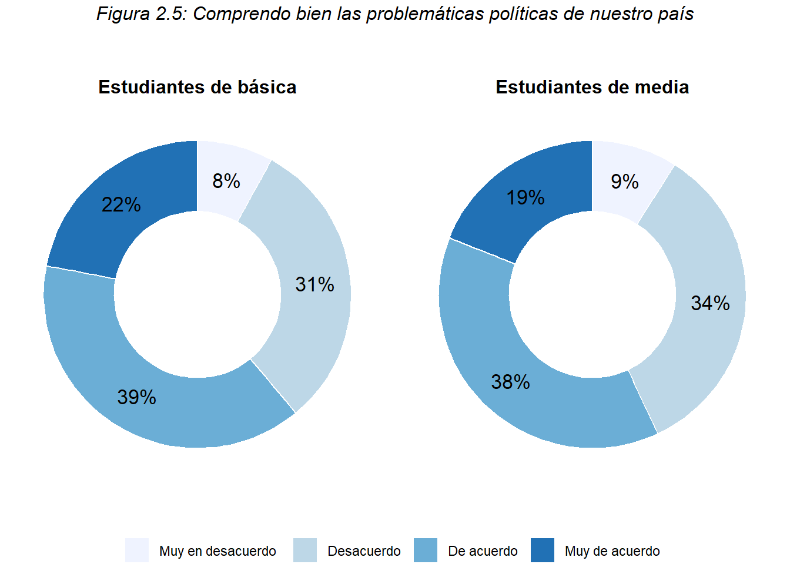
Al diferenciar por curso del estudiante, se puede observar que estudiantes de básica están más de acuerdo con que comprenden bien las problemáticas del país (61%).
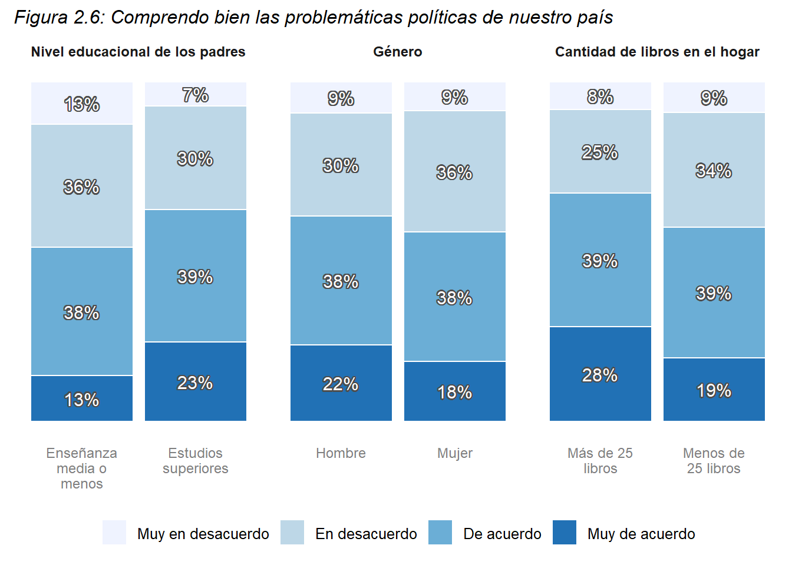
Estudiantes con padres que tienen estudios superiores considerna en mayor medida que comprenden bien las problemáticas políticas del país (62%). Al diferenciar por género, estudiantes varones están más de acuerdo con la afirmación (60%). Por último, estudiantes que cuentan con más de 25 libros en su hogar cosnideran estar más de acuerdo con la afirmación en un 68%.
4.3 Autoeficacia digital
Esta sección alude a la percepción que tienen los/as estudiantes de su propia eficacia en el uso de TIC en el contexto escolar. Las preguntas presentadas a continuación son exclusivas de la ola 2 del estudio, es por ello que no se presenta una comparación con los resultados de la medición anterior.
- Edición de fotografías digitales/imágenes gráficas
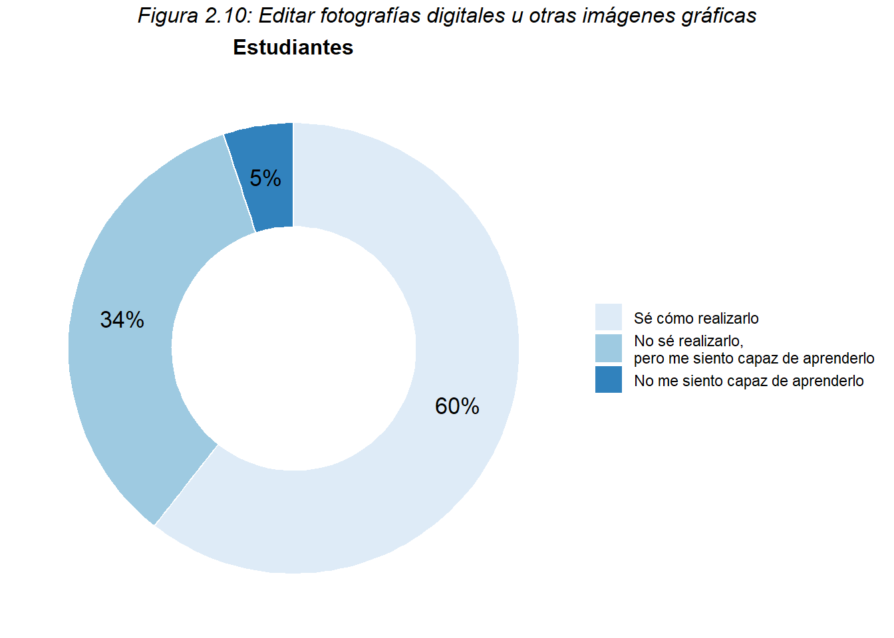
Los estudiantes contestaron en mayor medida que saben como editar fotografías digitales u otras imágenes gráficas (60%).
Cruces con características sociodemográficas de los /as estudiantes
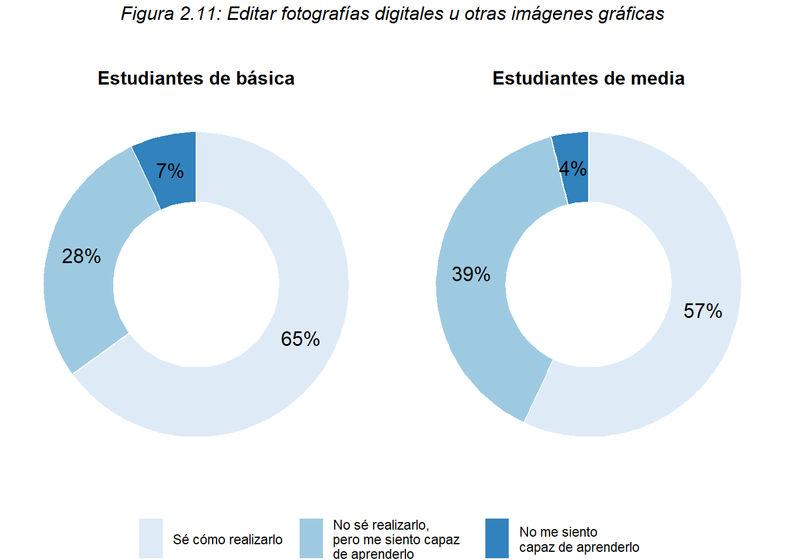
Al diferenciar por curso, se observa que estudiantes de básica consideran saber editar fotografías digitales u otras imágenes gráficas (65%) en mayor medida que sus pares que cursan enseñanza media (57%).
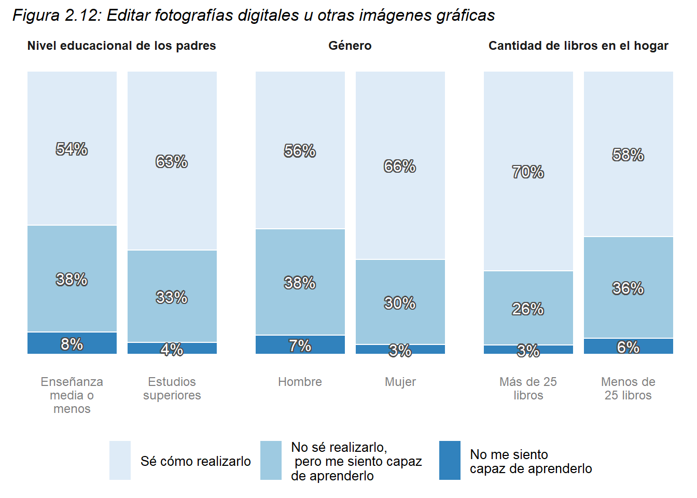
Estudiantes con padres con estudios superiores consideran en mayor medida que saben como editar fotografías u otras imágenes gráficas (63%). Al diferenciar por género, las mujeres consideran en mayor medida que saben como realizar dicha actividad (66%). Por último, estudiantes que cuentan con más de 25 libros en su hogar consideran saber cómo realizarlo (70%).
- Escritura o edición de texto
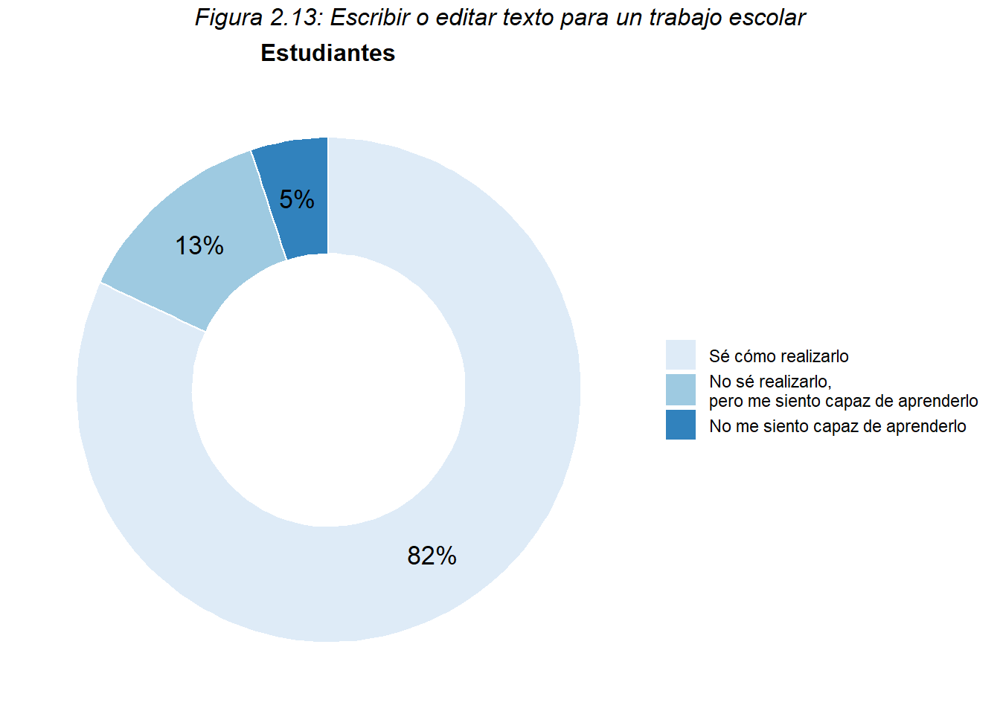
Los estudiantes consideran en mayor medida que saben como escribir o editar texto para un trabajo escolar (82%).
Cruces con características sociodemográficas de los/as estudiantes
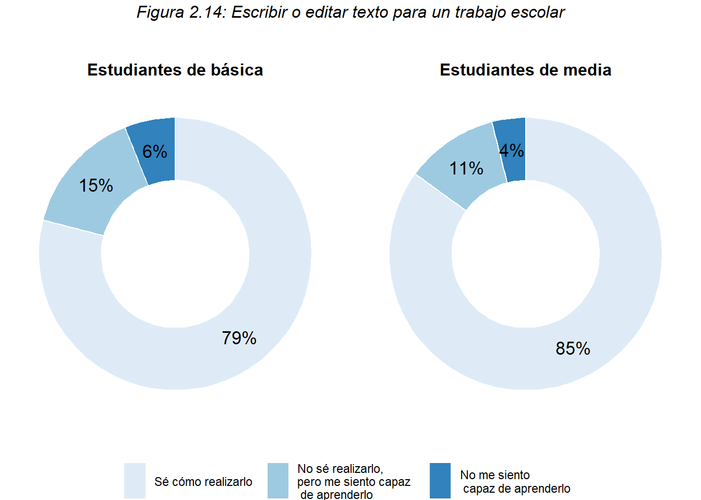
Al diferenciar por curso, estudiantes de enseñanaza media se seintes más capaces de escribir o editar texto para un trabajo escolar (85%) que estudiantes de básica (79%).
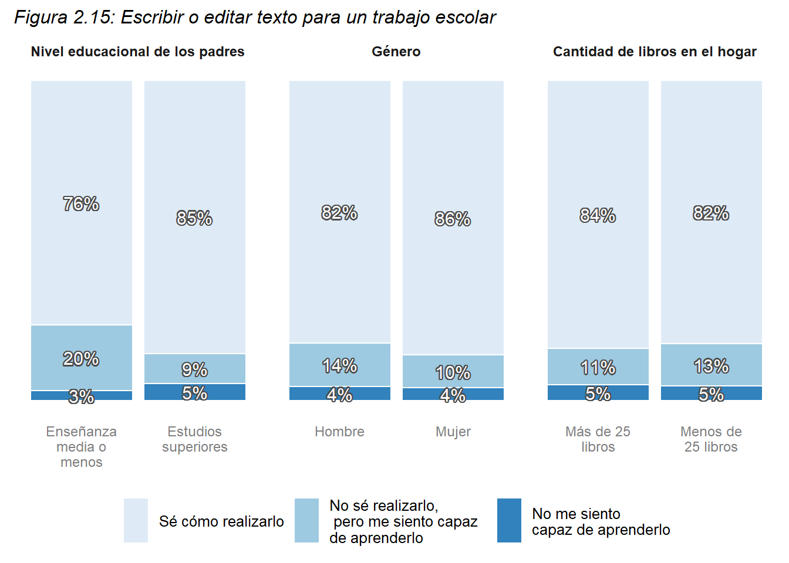
Estudiantes con padres con estudios superiores consideran en mayor medida que saben como escribir o editar un texto para un trabajo escolar (85%). Al diferenciar por género, las mujeres consideran en mayor medida que sabén como realizar dicha actividad (86%). Por último, estudiantes que cuentan con más de 25 libros en su hogar consideran saber cómo realizarlo (70%).
4.2 Socialización política en la escuela
Esta sección hace referencia a la escuela como un agente de socialización político, es decir, que esta tiene un papael en el proceso de transmisión de aprendizaje polítioc de los/as estudiantes. En específico, alude a un factor propio del ámbito escolar: el currículo de Formación Ciudadana. Así, la pregunta que dispuesta en esta sección alude a la percepción que tienen los/as estudiantes de la presencia e importancia de dicho currículo en sus establecimientos.
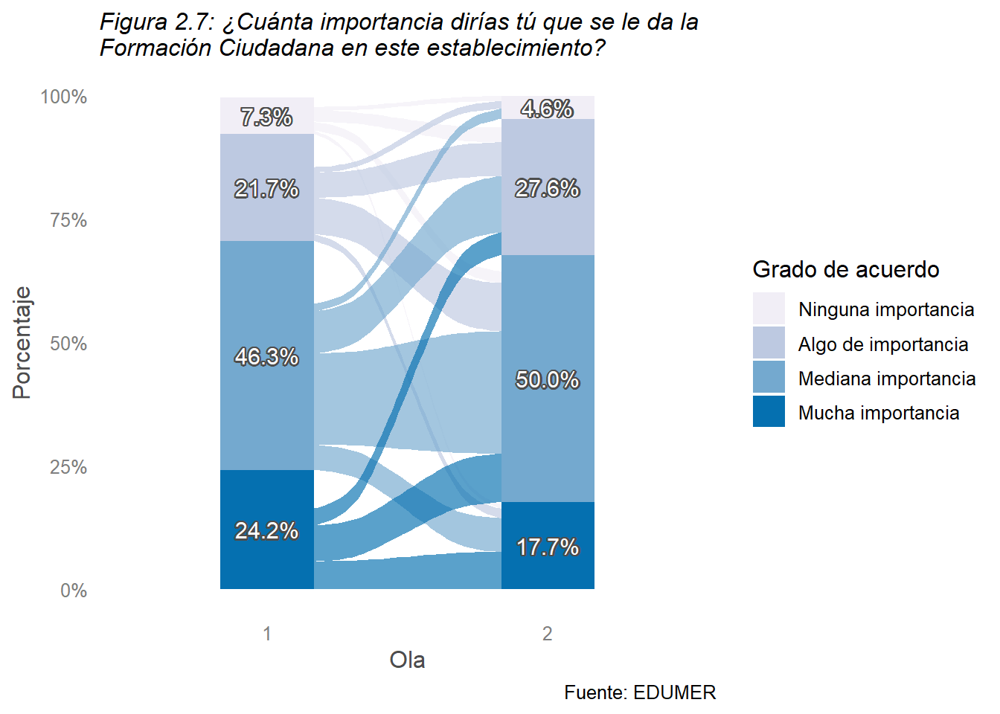
En la figura, se puede obsevrar que en la ola 2 los/as esudiantes consideran en mayor medida que que su escuela le netrega menor importnacia a la Formación Ciudadna (32.2%).
Cruces con características sociodemográficas de los estudiantes en la ola 2 del estudio
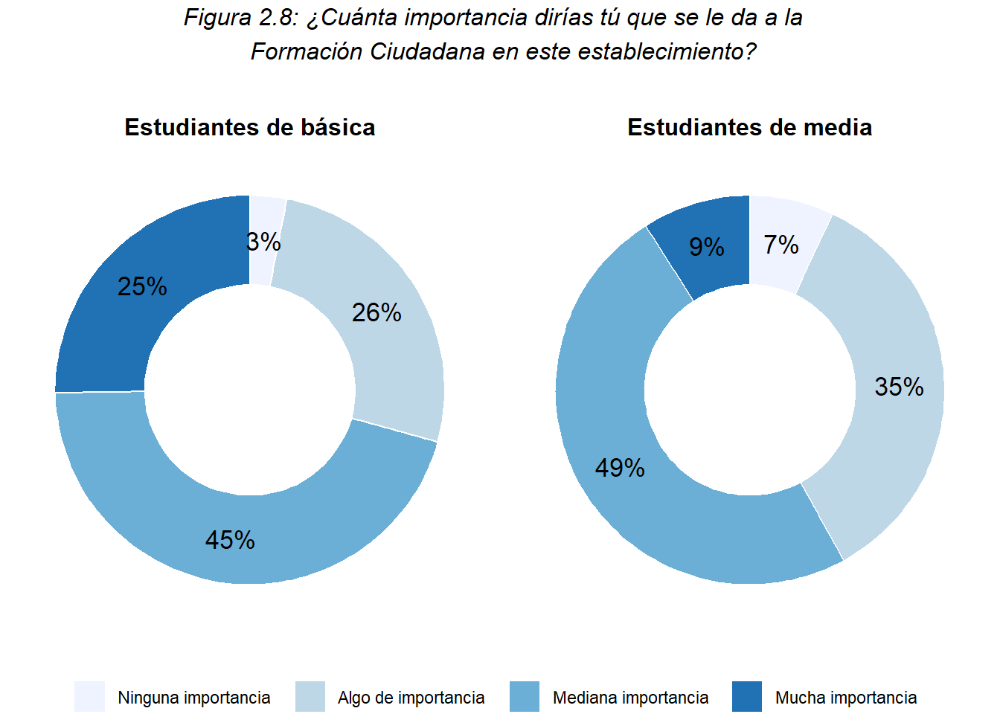
Al comparar por el curso del estudiante, es posible observar que estudiantes de básica consideran que su escuela le entrega importancia a la Formación Ciudadana (60%).
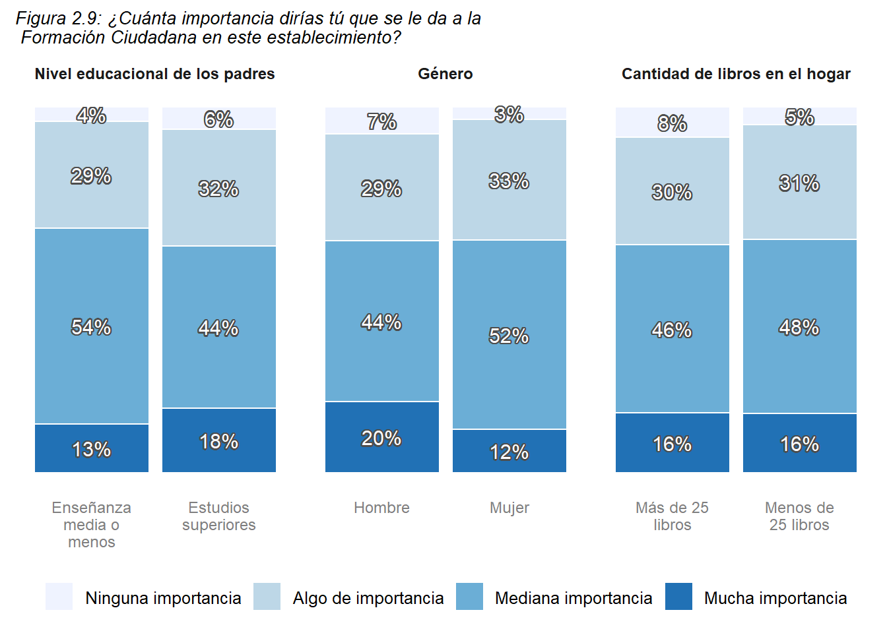
Estudiantes con padres con un nivel eduacional mpaximo alcanzado de enseñanza media o menos consideran que se le entrega mayor importancia a la Formación Ciudadana en su escula (67%). Al diferenciar por género, no se presentan diferencias. Por último, estudiantes que cuentan con mens de 25 libros en su hogar creen que su escuela le entrega mayor importancia a la Formación Ciudadana (64%).